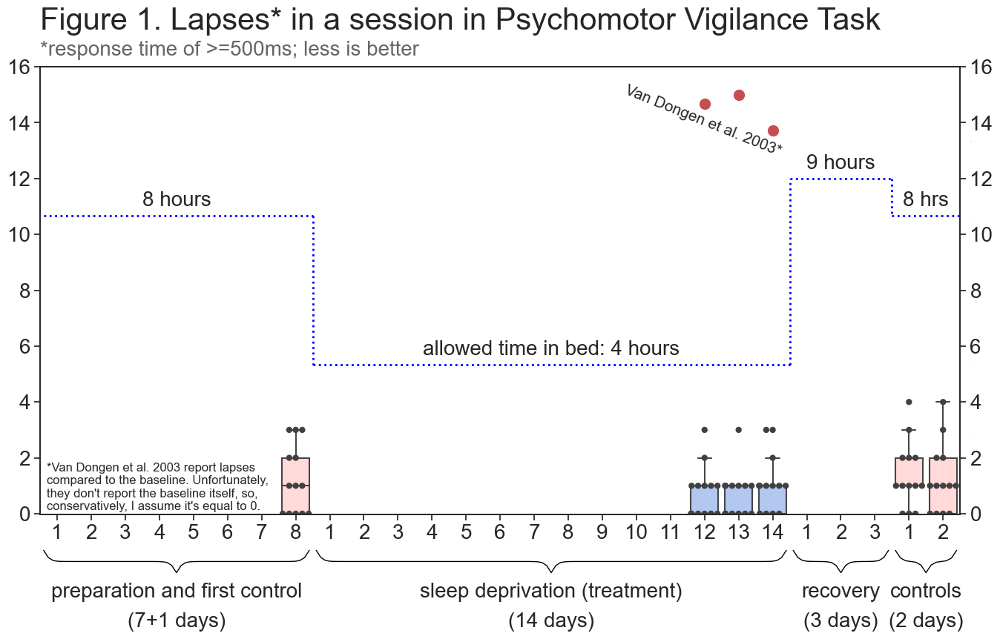
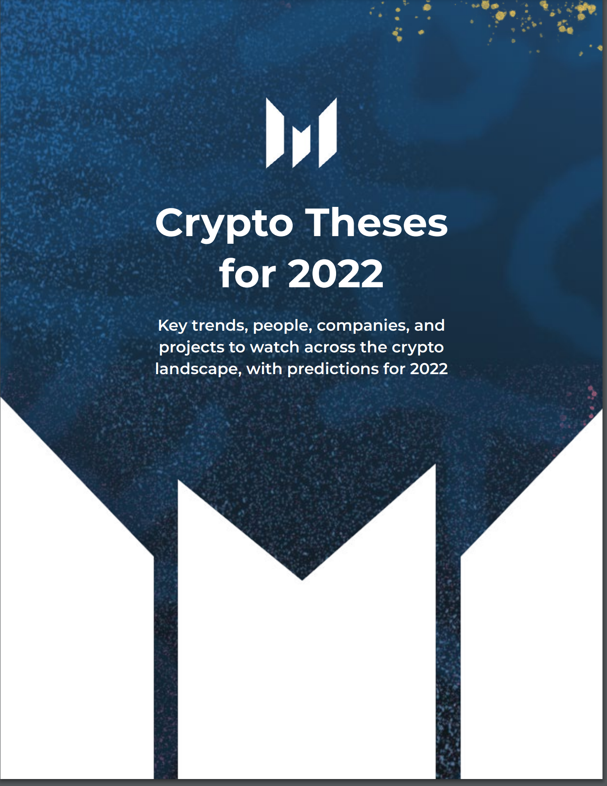
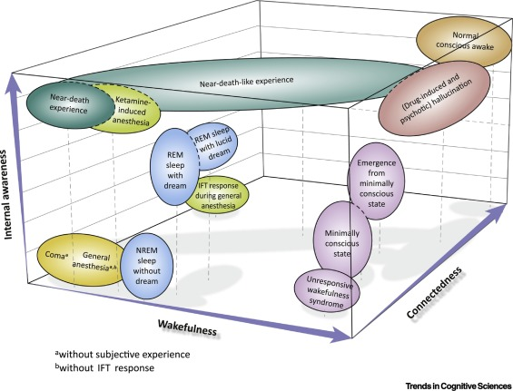
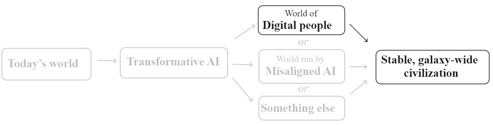
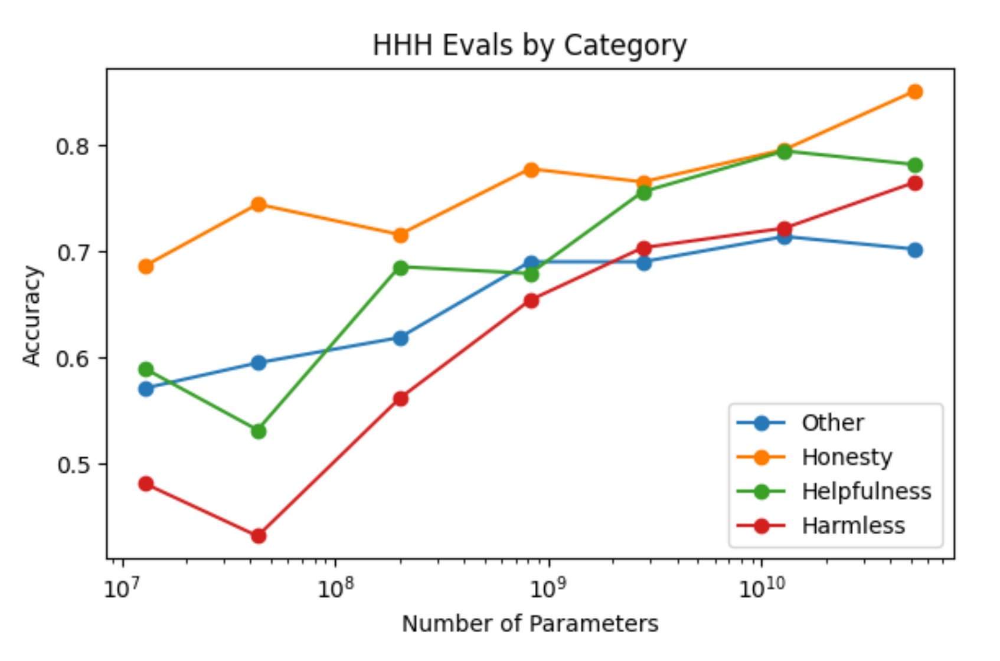

Harvard Business Review - Managing Oneself
by Peter F. Drucker, published 1999
This article in the HBR is an excerpt from Drucker’s book Management Challenges for the 21st Century. Drucker argues that to stay “engaged and productive during a work life in today’s knowledge economy that may span 50 years”, you need to understand your strengths and weaknesses and focus on improving your strengths. He starts by discussing how to identify your strengths using feedback analysis aka decision journaling, then talks about how to improve your strengths by identifying your learning style, values, and community. The final section is devoted to how to handle the second half of your life by developing a second career. Throughout the article, Drucker invokes “the historical view” and interleaves hypothetical situations and anecdotes from historical figures like Dwight Eisenhower, Lyndon Johnson, and George Patton.
I was surprised to find myself enjoying this article. Coming from the HBR, I was expecting a dry, academic tone but Drucker keeps the reader engaged with questions and anecdotes. From a different perspective, Drucker’s writing is unrigorous and unscientific. Nevermind not citing support for his claims, he barely bothers to justify them at all – it’s just not that kind of writing. I found the final section, which discusses the importance of having a second career and starting early to develop one, particularly relevant. I’m not quite the age where it’s time for a second career, but now would be a good time to start developing a “a second major interest – not just a hobby.”
There is one prerequisite for managing the second half of your life: You must begin long before you enter it… If one does not begin to volunteer before one is 40 or so, one will not volunteer once past 60.
Similarly, all social entrepreneurs I know began to work in their chosen second enterprise long before they reached their peak in their original business.

The Effects on Cognition of Sleeping 4 Hours per Night for 12-14 days: a Pre-Registered Self-Experiment
by Alexey Guzey, published 2020
(link, archive)
This blog post details a sleep experiment performed by the author, Alexey Guzey. The experiment was thorough in its design (plan and hypothesis posted online in advance), execution (only minor deviations from the plan and all documented), and analysis (consulted literature for design and interpretation of results, also discussed qualitative experience). Guzey found that his hypotheses was correct: his cognition was not impaired during the experiment. This conflicts with the finding of the primary reference study he cites, The cumulative cost of additional wakefulness, which found significant cognitive impairment from sleeping 6 hours a night for two weeks. Even though Guzey enjoyed the 2-3 hours of productive time he gained every day and did not experience sleep debut, he reported that “maintaining this sleep schedule was incredibly hard.”
I enjoyed reading this post and applaud Guzey for conducting the experiment and contributing one data point to science. I experimented with my own sleep schedule (see Uberman experiment) a few years ago and did not have the vision to make it a scientific study, establish procedures, and see it through. I relied solely on willpower, which invariably faltered and I failed miserably and quickly.
In my (different) experience, I played video games for hours to stay awake because I was unable to focus. I experienced nearly zero hours of productivity. But I didn’t do it rigorously like Guzey did, so all I have is the hazy memory of my experience. Guzey’s experiment sparked a lot of discussion on HackerNews, a counter-theses, and another post about two years later: Theses on Sleep.
I was fully alert (very roughly) 85% of the time I was awake, moderately sleepy 10% of the time I was awake, and was outright falling asleep 5% of the time. I was able to go from “falling asleep” to “fully alert” at all times by playing video games for 15-20 minutes. I ended up playing video games for approximately 30-90 minutes a day and was able to be fully productive for more than 16 hours a day for the duration of the experiment.
My Four Months as a Private Prison Guard
by Shane Bauer, published 2016
(link, archive)
This long (36k words) article, which was later expanded into a book chronicles the author’s, Shane Bauer’s, 4-month stint as a prison guard at Winn Correctional Center, a private prison in Louisiana. Bauer’s story starts with his application process and acceptance of the job offer, moves onto training and regular employment, and ends with him hurriedly driving across the border to Texas after his cameraman is charged with trespassing while trying to film video for this story. As Bauer describes it, the source of the problems at Winn was corporate’s near-sighted focus on profit and cutting costs: staff were demoralized because they were paid less than their peers at public prisons, every department was perpetually understaffed and had no funding to hire, prisoners were bored and stir-crazy because many activities were canceled, prisoners were refused medical treatment to save money, etc.
I enjoyed how Bauser’s writing focused on his interactions with the prisoners and other guards, and was only occasionally interspersed with interludes of analysis, fact-checking, and comments by the prison company drawn from 150 questions Bauer asked them. Given that this article was investigative journalism, I expected to see accounts of brutality and inhumanity, and indeed both of these elements were present. However, I was surprised to see how much of a mental toll working as a prison guard took on Bauer. He initially tried to maintain peace by connecting with the prisoners – he gave an account where he apologized after an outburst – but Bauer wasn’t immune to the hazards of the job and paranoia soon took root :
I see conspiracies brewing. Things I used to view as harmless transgressions I now view as personal attacks. When a physically disabled man doesn’t leave the shower in time for count, I am certain he is testing me, trying to break me down, to dominate me.
I carry all this with me. Some days, when I stop for gas on the way home from work I notice myself, for a split second, casing the black men who enter the gas station. When I shoot pool at the local bar, I imagine—I hope—that the white man in hunting camouflage who’s playing against me will do something to spark a fight.

Crypto Theses for 2022
by Ryan Selkis, published 2021
(link, archive)
This is a 165-page report on “the crypto landscape with predictions for 2022” written by Ryan Selkis, the founder and CEO of Messari, a crypto market intelligence start-up. I am impressed that the CEO of a crypto startup would dedicate one month of his working time to personally write this report, and that he would release it for free when the premise of his start-up is to sell market intelligence! Selkis could have gotten the same level of publicity in other ways, and I see this as a large donation of his time to the community.
The report is organized into ten sections. It starts with Top 10 Narrative & Investment Themes, which gives a helpful overview of trends and topics to come. Subsequent sections cover different key topics: both exciting (DeFi 2.0) and boring but important (American Crypto Policy). Sections typically start with a beginner-friendly summary and history before moving onto current news, analysis, and speculation. Selkis’s report is filled with jokes and at the time same includes many figures, statistics, and citations. I particularly appreciated how he gives firm opinions backed by reasoning with minimal waffling or hedging. The light tone and straightforward writing make the report easy to read and ingest.
I was immersed in the crypto world for two years while working at a blockchain startup, but I stopped keeping up-to-date after I left in 2019. My primary interest in reading this report was to catch up on the developments and progress that I missed, and I missed a lot. When I left, people were talking about ICO’s and shitcoins, Bitcoin’s scaling problem, and the pending Bitcoin ETF. Two years later, people are talking about completely different things – NFT’s, Defi, Layer 1 & 2 networks – and both the level of complexity and number of new catchy names has skyrocketed. I feel like I’m starting all over in the crypto world and it’s overwhelming.
I understood ~30% of the report and that’s okay. I came away with an appreciation of new developments and a long list of citations to read and words to look up. This turned out to be much more educational and valuable than I anticipated. Selkis wraps up his report with a final section that brings the reader from the realm of fantasy, money, and FOMO back to Earth. He injects some final humor and reminds us to take care of ourselves and live life.
Get used to hearing the term “Web3” because it could eventually replace “crypto” as the go to moniker for the decentralized tech movement. It plays better to new audiences, it’s less scary sounding to regulators, and it’s a faster and more accurate meme.
Web1 → Web2 → Web3
Read-Only → Read-Write → Read-Write-Own
>by Messari analyst Eschita
If 2020 was all about Defi, and 2021 was all about NFT’s, 2022 will be the year of the DAO.

Near-Death Experience as a Probe to Explore (Disconnected) Consciousness
by Charlotte Martial, Héléna Cassol, Steven Laureys, Olivia Gosseries published 2020 (link, archive)
This paper proposes a new framework for evaluating consciousness consisting of three dimensions: wakefulness, connectedness, and internal awareness. The authors argue that this framework is useful because the lack of a standard language for describing near-death experience (NDE’s) has resulted in confusion in the medical literature. The paper also briefly summarizes the state and landscape of NDE research and how it serves as an avenue for general consciousness research.
Since this was a review article, I was expecting a lot of citations but I was still surprised to see how many there were: 104 citations over 9 pages. This must have taken a long time to research and write. No wonder there are four authors.
The AI Revolution: The Road to Superintelligence
Tim Urban, published 2015 (link, archive)
This two-part series by the author of popular stick-figure-illustrated blog Wait But Why gives an overview of the types of artificial intelligence (AI) and the impact on humanity if the highest level, artificial superintelligence (ASI), is reached. The first part of the series starts by defining three levels of AI:
- Artificial narrow intelligence (ANI) aka weak
- Artificial general intelligence (AGI) aka strong
- Artificial super intelligence (ASI)
and then discusses how and when we would reach AGI. We already have many forms of ANI, e.g. Siri, and Urban outlines three approaches that people are taking to create AGI:
- Emulate the human brain → deep neural networks, e.g. GPT-3
- Emulate evolution → genetic algorithms
- Outsource the effort → create a computer good at doing AI research and allow it to modify itself
Regardless of the specific means, Urban summarizes the view that most scientists believe AGI will be achieved – the debate is when – and that the reason for this is the exponential growth of human progress.
The second part of the series covers the consequences of ASI on humanity. The same way that human progress’s exponential growth will lead us to develop AGI, AGI’s exponential growth will lead itself to ASI, and expert speculation agrees that this will happen in the 21st century. By definition it is impossible to predict what ASI will do, but theorists envision two outcomes - extinction or immortality. The field of AI safety is devoted to avoiding the extinction scenario by guiding AI development to be friendly to humanity. On the plus side, it is exciting to consider that immortality could be achieved during our lifetime.

This series was a fun and educating read, certainly more fun than reading the heavy seminal book, Superintelligence: Paths, Dangers, Strategies, on this subject by Bostrom. In the typical style for his blog, Urban includes many helpful and silly visualizations. Some of them are simply summaries of the material or just a way to express a concept, e.g. exponential growth. However, some of his drawings augment the material by showing relationships and coining new terms. For example, in the chart to the right, Urban names the two main camps Confident Corner and Anxious Avenue (and later on also Panicked Prairie and Hopeless Hills). This is silly, and it also helped me remember the positions of the two camps and dampened the sense of doom that pervades any discussion of superintelligence. I enjoyed the humorous tone of the series and learned a bunch. My only complaint is that Urban occasionally appeals to authority. I suspect he does it to dispel the sci-fi-esque atmosphere of some of the discussions but I found it annoying and unnecessary.
…people who understand superintelligent AI call it the last invention we’ll ever make—the last challenge we’ll ever face.
So let’s talk about it.
The Moral Foundations of Progress
Applied Divinity Studies, published 2021 (link, archive)
This essay by Applied Divinity Studies (ADS) addresses and reinforces arguments made by Tyler Cowen in his book Stubborn Attachments. Cowen’s main point is that economic growth proxies well for moral values and so should be pursued in conjunction with commitment to human rights. ADS’s essay is very well-structured and reminiscent of a Powerpoint presentation. Each major section is bolded and comes with subsections that are also bolded; reading the section titles basically summarizes the essay:
- 1. Wealth Enables Plural Values
- 1. Has wealth actually led to happiness?
- 2. Will the wealth/value correlation continue?
- 3. This is all post-hoc selection bias: centuries of growth have preserved only the values which growth is capable of harboring, and we’ve already lost sight of many worthwhile values.
- 4. The Longtermist Objection
- 5. Conclusion
- 2. There is no Growth/Sustainability Trade-off
- 1. Growth as a Political Panacea
- 2. The Risk Kuznets Curve
- 2.b. Existential Risk, Age and Longevity
- Conclusion: Making Progress (Studies)
- Is economic growth tractable?
- Is moral progress possible?
- How does growth impact risk?
- Appendix A: Minor Objections to Stubborn Attachments
- Against the Overtaking Criterion
- Against redistribution to the rich
- Replacement cost is much higher than assumed
- On Agricultural Productivity
- Appendix B: A short testimony on the human impact of economic growth
Having not read Stubborn Attachments, I was initially confused about the purpose of this essay. ADS supports Cowen’s argument by bringing up and then addressing counterexamples. Is this just essay a summary of the book, or a rehash and supplement using ADS’s own words and evidence? ADS doesn’t answer this question, but does eventually state his purpose in the Conclusion:
…I hope to invoke a sense of intellectual curiosity, feeling of opportunity, and desire to rigorously examine my numerous unjustified assertions.
And then goes to urge readers to formalize the field of Progress Studies, lamenting the status quo:
…even if I hunker down for a year to write research papers, they would be meaningless in the absence of intellectual institutions. A result can only be made valid in the context of an epistemic framework.
ADS gives a, seemingly contradictory, answer to this problem:
… don’t worry too much about “field building” or what happens at the meta-level. Simply embark on a quest to rigorously answer important questions, and invite others to join in the adventure.
In any case, I enjoyed reading this essay and found it to be a useful overview of Stubborn Attachments and introduction to Progress Studies. ADS succeeded in his goal of piquing my interest in this new field. I do think the essay could have benefited from more editing. There are several typos and spelling errors, and the essay overall doesn’t feel “tight”™. In particular, I found ADS’s inclusion of charts from references to be excessive and unhelpful; in most cases, the citation alone would have sufficed.
Given a reasonable sounding set of plural values, Cowen claims that economic growth will benefit all of them.
…Say investments in economic growth return 100x over the next century, whereas investments in beauty only return 2x. Even if your only value is beauty, Attachments argues it is thus preferable to invest in economic growth, so long as there is even a small positive correlation between the two values.

Digital People Would Be An Even Bigger Deal
Holden Karnofsky, published 2021 (link, archive)
This post by Holden Karnofsky, the co-CEO of Open Philanthropy and co-founder of GiveWell, talks about the consequences on society of having digital people. He argues that digital people as depicted in popular culture, e.g. Netflix show Altered Carbon, video game Cyberpunk 2077), tend to focus to immortality, so he devotes his post to other impacts of digital people:
- increased productivity via copying
- progress in the social sciences by using copies to conduct experiments
- complete control of the environment
- straightforward expansion into space
- locking in community rules, e.g. political regimes, ideologies, cultures
Holden is a big thinker and doesn’t shy away from bold ideas. I felt particularly squeamish reading his scenario for #2:
… people could make copies of themselves (including sped-up, temporary copies) to explore how different choices, lifestyles, and environments affected them.
He later goes on to say how these digital copies could then retire in comfort after the experiment is over. Even so, this seems unethical and probably unpleasant for the copy. And if the original is inclined to conduct experiments, wouldn’t the copy also do the same and lead to recursion? I see my reaction to this scenario as a demonstration of this post’s value: it got me thinking about the possibility and how my concerns could be addressed.
I disagree with Holden’s conclusion to the post:
My take on a future with digital people is that it could be very good or very bad, and how it gets set up in the first place could irreversibly determine which.
In the rush to claim research fame, I see it as more likely than not that the first digital person and society will be unintentionally setup poorly. Even if this mis-configured setup propagates beyond Earth, I don’t see it as irreversibly bad. Assuming that the first batch of digital humans/society isn’t hostile towards biological humans, we (and they) will have the opportunity to design more and different digital humans.
I Went Undercover With a Border Militia. Here’s What I Saw.
Shane Bauer, published 2016
This article is another great piece of investigative journalism by Shane Bauer. This time, he creates a new Facebook account and networks his way into a border patrol operation in Nogales, Arizona led by the Three Percent United Patriots (3UP), which gets its name from the belief that just 3 percent of American colonists were responsible for overthrowing the British in Revolutionary War. Bauer’s reporting focuses on his interactions and conversations with people in the field, and interludes are filled with essential background knowledge for the reader and fact-checking.
Coming into this piece, I was against the paramilitary movement, and Bauer makes no attempt to persuade the reader either way. Instead, he succeeds in storytelling and humanizing the members of 3UP. When he told the story of how one member joined after a major shooting event near his hometown or about how another member was aimless after leaving the military but 3UP is now like therapy filling his heart, I gained respect for how these people were taking action to improve themselves and protect their families and community.
He [Mike Morriss, founder of 3UP] doesn’t think 3UP is going to stop drug smuggling or illegal immigration with these [border patrol] operations, but he feels they are a chance for patriots to serve their country. He doesn’t even think immigration is the main concern. The real problem is that America has become unrecognizable: The federal government has become tyrannical and the country’s customs and culture are being destroyed.

A General Language Assistant as a Laboratory for Alignment
Amanda Askell, et al., published 2021
This is the first paper by the new AI safety startup Anthropic, which was started in 2021 by a former VP of research at OpenAI who worked on GPT-3. The paper aims to gather data on the alignment problem by choosing a definition for “alignment” and then running experiments against today’s best AI – GPT-3. The authors acknowledge that their definition – helpful, honest, harmless (HHH) – is vague and leaves many questions open. They address some of this upfront and devote Appendix E to further discussion.
The rest of the paper is devoted to three experiments. I was not able to follow the technical details but it was interesting to see that the authors used pre-existing work to evaluate ethics, virtue, toxicity, commonsense, etc. The final section is a helpful overview of current research and how this paper is related to and/or extends previous work.
Progress in AI alignment will hopefully not require us to reach certainty about any of them [list of open questions], since such certainty is unlikely to be achieved.